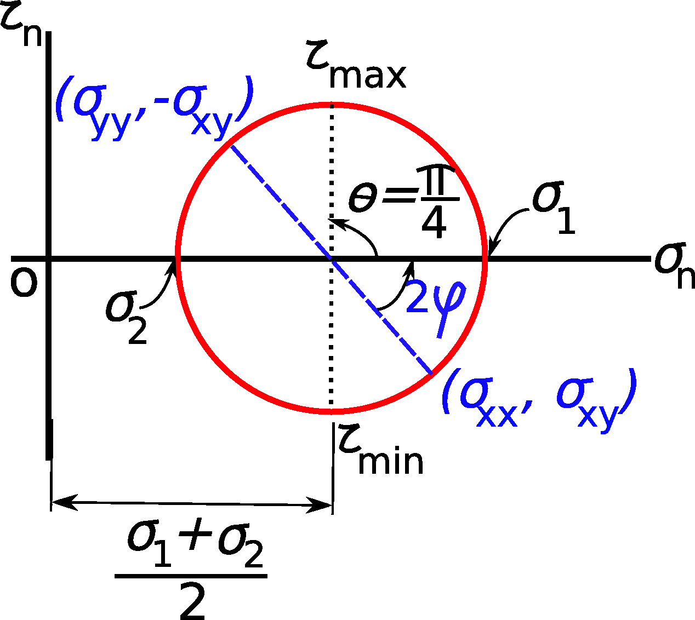

Introducción a la Física de los
Materiales Granulares
Descripción del estado tensional de materiales granulares.
LUIS A. PUGNALONI
Departamento de Física
Facultad de Ciencias Exactas y Naturales
Universidad Nacional de La Pampa — CONICET
Resumen
- Fenomenología
- Tensor de tensiones de Cauchy (definición y propiedades)
- Círculo de Mohr
- Criterio de falla Mohr–Coulomb
- Efecto Janssen
- Modelo OSL
- Otras relaciones constitutivas
- Promediado: De lo micro a lo macro
- Redes de fuerza
Fenomenología (efecto Janssen)

- $F < Mg$
- La fricción con las paredes cambia la saturación.
- La forma de llenado cambia la saturación.
- La columna tiene que estar en fricción "movilizada" para que se observe la saturación. Esto es, al borde de iniciar el deslizamiento del material sobre las paredes del silo.
Fenomenología (pilas)
El punto de mayor presión en el fondo no siempre coincide con el centro de la pila.
Fenomenología (función respuesta)
Distribución de fuerzas de contacto

Para $f \lt \langle f\rangle$ diferentes autores encuentran comportamientos diferentes (meseta, máximo, decrecimiento, etc.). En particular depende de si se miden contactos de la periferia o contactos del centro del sistema.
Estudios recientes muestran que $P(f) \propto \exp[-\beta(f/\langle f\rangle)^2]$ para $f \gt \langle f\rangle$.
Tensor de tensión de Cauchy
- $\boldsymbol{T}^{(\boldsymbol{n})} = \displaystyle\lim_{\Delta s\to 0}\frac{\Delta\boldsymbol{F}}{\Delta s} = \frac{d\boldsymbol{F}}{ds}$ existe. $\boldsymbol{T}^{(\boldsymbol{n})}$ es el vector de tensión (principio de Cauchy).
- $\sigma = \displaystyle\lim_{\Delta s\to 0}\frac{\Delta F^n}{\Delta s}$ y $\tau = \displaystyle\lim_{\Delta s\to 0}\frac{\Delta F^t}{\Delta s}$
- $\boldsymbol{T}^{(\boldsymbol{n})}$ es el mismo para un dado punto del material y un dado $\boldsymbol{n}$ sin importar la curvatura de $\Delta s$ (postulado de Cauchy).
- $-\boldsymbol{T}^{(\boldsymbol{n})} = \boldsymbol{T}^{(-\boldsymbol{n})}$ (lema fundamental de Cauchy). Tercera ley de Newton.
- Para cada punto del material existe un tensor $[\sigma]$ tal que el vector de tensión para una normal $\boldsymbol{n}$ es
$\boldsymbol{T}^{(\boldsymbol{n})} = [\sigma]\boldsymbol{n} \to T_j^{(\boldsymbol{n})} = \sigma_{ij}n_i$ (teorema de la tensión de Cauchy).
$\sigma = F^n/A$
$\tau = F^t/A$
Teorema de Cauchy (demostración)
Aplicando la segunda ley de Newton sobre el tetraedro de la figura
$\boldsymbol{T}^{(\boldsymbol{n})}dA + \boldsymbol{T}^{(-\boldsymbol{e}_1)}dA_1 + \boldsymbol{T}^{(-\boldsymbol{e}_2)}dA_2 + \boldsymbol{T}^{(-\boldsymbol{e}_3)}dA_3 = dm\,\boldsymbol{a}$
donde $dm$ es la masa del tetraedro y $\boldsymbol{a}$ su aceleración.
Como $\boldsymbol{T}^{(-\boldsymbol{n})} = -\boldsymbol{T}^{(\boldsymbol{n})}$ y $dA_1 = (\boldsymbol{n}\cdot\boldsymbol{e}_1)dA$ etc. tenemos
$\boldsymbol{T}^{(\boldsymbol{n})}dA - \boldsymbol{T}^{(\boldsymbol{e}_1)}(\boldsymbol{n}\cdot\boldsymbol{e}_1)dA - \boldsymbol{T}^{(\boldsymbol{e}_2)}(\boldsymbol{n}\cdot\boldsymbol{e}_2)dA - \boldsymbol{T}^{(\boldsymbol{e}_3)}(\boldsymbol{n}\cdot\boldsymbol{e}_3)dA = dm\,\boldsymbol{a}$
Si $dm \to 0$, entonces
Teorema de Cauchy (demostración)
$\boldsymbol{T}^{(\boldsymbol{n})} = \boldsymbol{T}^{(\boldsymbol{e}_1)}n_1 + \boldsymbol{T}^{(\boldsymbol{e}_2)}n_2 + \boldsymbol{T}^{(\boldsymbol{e}_3)}n_3$
El vector de tensión en cada cara puede descomponerse en sus componentes cartesianas como
$\boldsymbol{T}^{(\boldsymbol{e}_1)} = T_1^{(\boldsymbol{e}_1)}\boldsymbol{e}_1 + T_2^{(\boldsymbol{e}_1)}\boldsymbol{e}_2 + T_3^{(\boldsymbol{e}_1)}\boldsymbol{e}_3 = \sigma_{11}\boldsymbol{e}_1 + \sigma_{12}\boldsymbol{e}_2 + \sigma_{13}\boldsymbol{e}_3$
$\boldsymbol{T}^{(\boldsymbol{e}_2)} = T_1^{(\boldsymbol{e}_2)}\boldsymbol{e}_1 + T_2^{(\boldsymbol{e}_2)}\boldsymbol{e}_2 + T_3^{(\boldsymbol{e}_2)}\boldsymbol{e}_3 = \sigma_{21}\boldsymbol{e}_1 + \sigma_{22}\boldsymbol{e}_2 + \sigma_{23}\boldsymbol{e}_3$
$\boldsymbol{T}^{(\boldsymbol{e}_3)} = T_1^{(\boldsymbol{e}_3)}\boldsymbol{e}_1 + T_2^{(\boldsymbol{e}_3)}\boldsymbol{e}_2 + T_3^{(\boldsymbol{e}_3)}\boldsymbol{e}_3 = \sigma_{31}\boldsymbol{e}_1 + \sigma_{32}\boldsymbol{e}_2 + \sigma_{33}\boldsymbol{e}_3$
Luego
$\boldsymbol{T}^{(\boldsymbol{n})} = \sigma_{ij}\,\boldsymbol{e}_j\,n_i \to T_j^{(\boldsymbol{n})} = \sigma_{ij}\,n_i \to$ $\boldsymbol{T}^{(\boldsymbol{n})} = [\sigma]\boldsymbol{n}$
Tensión normal y tangencial:
$\sigma_n = \boldsymbol{T}^{(\boldsymbol{n})}\cdot\boldsymbol{n} = ([\sigma]\boldsymbol{n})\cdot\boldsymbol{n} = \sigma_{ij}n_in_j$
$\tau_n = \sqrt{(\boldsymbol{T}^{(\boldsymbol{n})})^2 - \sigma_n^2} = \sqrt{\sigma_{ij}\sigma_{ik}n_jn_k - (\sigma_{ij}n_in_j)^2}$
Equilibrio mecánico y tensor de Cauchy (traslación)
Un cuerpo está sometido a fuerzas $\boldsymbol{T}^{(\boldsymbol{n})}$ en su superficie y fuerzas $\boldsymbol{F}$ en su volumen. Si no posee aceleración las fuerzas aplicadas se anulan, luego
$\displaystyle\oint_S T_i^{(\boldsymbol{n})}\,dS + \int_V F_i\,dV = 0 \quad \forall i$
$\displaystyle\oint_S \sigma_{ji}\,n_j\,dS + \int_V F_i\,dV = 0 \quad \forall i$
Pero el teorema de Gauss dice que
$\displaystyle\oint_S \sigma_{ji}\,n_j\,dS = \int_V \text{div}(\sigma_{ji})\,dV = \int_V \sigma_{ji,j}\,dV \quad\text{donde}\quad \text{div}(\sigma_{ji}) = \sigma_{ji,j} = \sum_j \frac{\partial\sigma_{ji}}{\partial x_j}$
Luego
$\displaystyle\int_V [\sigma_{ji,j} + F_i]\,dV = 0 \quad$ entonces para $V \to 0$ tenemos
Equilibrio mecánico y tensor de Cauchy (rotación)
Si el cuerpo anterior además no posee aceleración angular los torques aplicados se anulan, luego
$\displaystyle\oint_S (\boldsymbol{r}\times\boldsymbol{T}^{(\boldsymbol{n})})\,dS + \int_V (\boldsymbol{r}\times\boldsymbol{F})\,dV = \boldsymbol{0}$
La componente $\boldsymbol{e}_3$ será
$\displaystyle\oint_S (x_1 T_2^{(\boldsymbol{n})} - x_2 T_1^{(\boldsymbol{n})})\,dS + \int_V (x_1 F_2 - x_2 F_1)\,dV = 0$
Según la definición del tensor de Cauchy
$\displaystyle\oint_S (x_1\sigma_{i2}n_i - x_2\sigma_{i1}n_i)\,dS + \int_V (x_1 F_2 - x_2 F_1)\,dV = 0$
Usando el teorema de Gauss
$\displaystyle\int_V \text{div}(x_1\sigma_{i2} - x_2\sigma_{i1})\,dV + \int_V (x_1 F_2 - x_2 F_1)\,dV = 0$
Equilibrio mecánico y tensor de Cauchy (rotación)
$\displaystyle\int_V \text{div}(x_1\sigma_{i2} - x_2\sigma_{i1})\,dV + \int_V (x_1 F_2 - x_2 F_1)\,dV = 0$
$\displaystyle\int_V (x_{1,i}\sigma_{i2} + x_1\sigma_{i2,i} - x_{2,i}\sigma_{i1} - x_2\sigma_{i1,i} + x_1 F_2 - x_2 F_1)\,dV = 0$
$\displaystyle\int_V [\delta_{1i}\sigma_{i2} - \delta_{2i}\sigma_{i1} + x_1(\sigma_{i2,i} + F_2) - x_2(\sigma_{i1,i} + F_1)]\,dV = 0$
donde $\delta_{ij}$ es la delta de Kronecker y los dos últimos términos se cancelan por la condición de equilibrio de traslación. Luego
$\displaystyle\int_V (\sigma_{12} - \sigma_{21})\,dV = 0 \quad$ entonces
Tensor principal de tensión
- El tensor $[\sigma]$ se puede diagonalizar eligiendo (rotando) el sistema cartesiano de modo de obtener los ejes principales y los autovalores $\sigma_1$, $\sigma_2$ y $\sigma_3$ que forman su diagonal.
- Cuando $[\sigma]$ es simétrico (sistema mecánicamente estable) los autovalores son reales.
- Los coeficientes de la ecuación característica son invariantes ya que no dependen del sistema coordenado y son:
$I_1 = Tr([\sigma]); \quad I_2 = \sigma_1\sigma_2 + \sigma_2\sigma_3 + \sigma_3\sigma_1; \quad I_3 = \det([\sigma])$
- Puede descomponerse $[\sigma]$ en una parte hidrostática $\frac{1}{3}Tr([\sigma])$ y un deviator $s_{ij}$
$\sigma_{ij} = \dfrac{1}{3}Tr([\sigma])\delta_{ij} + s_{ij}$
Círculo de Mohr (2D)
En el sistema coordenado principal $(1,2)$ la tensión normal al plano es
$\sigma_n = \sigma_{ij}n_in_j = \sigma_1 n_1^2 + \sigma_2 n_2^2$.
Luego, $\sigma_n$ puede escribirse como
$\sigma_n = \sigma_1\cos^2\theta + \sigma_2\sin^2\theta = \sigma_1\left(\dfrac{1+\cos 2\theta}{2}\right) + \sigma_2\left(\dfrac{1-\cos 2\theta}{2}\right)$

En $(x,y)$:
$[\sigma] = \begin{bmatrix} \sigma_{xx} & \sigma_{xy} \\ \sigma_{yx} & \sigma_{yy}\end{bmatrix}$
En $(1,2)$, $[\sigma]$ es diagonal:
$[\sigma] = \begin{bmatrix} \sigma_1 & 0 \\ 0 & \sigma_2\end{bmatrix}$
con $\sigma_1 > \sigma_2$
Círculo de Mohr (2D)
En el sistema coordenado principal $(1,2)$ la tensión tangencial al plano es
$\tau_n^2 + \sigma_n^2 = \sigma_{ij}\sigma_{ik}n_jn_k = \sigma_1^2 n_1^2 + \sigma_2^2 n_2^2$.
Luego, $\tau_n$ puede escribirse como:
$\tau_n^2 = \sigma_1^2\cos^2\theta + \sigma_2^2\sin^2\theta - [\sigma_1\cos^2\theta + \sigma_2\sin^2\theta]^2$.
Usando $\cos^2\theta = \frac{1}{2}(1+\cos 2\theta)$ y $\cos\theta\sin\theta = \frac{1}{2}\sin 2\theta$ obtenemos
En $(x,y)$:
$[\sigma] = \begin{bmatrix} \sigma_{xx} & \sigma_{xy} \\ \sigma_{yx} & \sigma_{yy}\end{bmatrix}$
En $(1,2)$, $[\sigma]$ es diagonal:
$[\sigma] = \begin{bmatrix} \sigma_1 & 0 \\ 0 & \sigma_2\end{bmatrix}$
con $\sigma_1 > \sigma_2$
Círculo de Mohr (2D)
Las ecuaciones de $\sigma_n$ y $\tau_n$ son la ecuación paramétrica de un círculo de radio $\frac{\sigma_1-\sigma_2}{2}$ con centro en $\left(\frac{\sigma_1+\sigma_2}{2},\,0\right)$
$\sigma_n = \dfrac{\sigma_1+\sigma_2}{2} + \dfrac{\sigma_1-\sigma_2}{2}\cos 2\theta$
$\tau_n = \dfrac{\sigma_1-\sigma_2}{2}\sin 2\theta$

$[\sigma] = \begin{bmatrix} \sigma_{xx} & \sigma_{xy} \\ \sigma_{yx} & \sigma_{yy}\end{bmatrix}$
Ejemplo (simétrico):
$\boldsymbol{n} = (1,0)$; $\boldsymbol{t} = (0,1)$
$\sigma_n = \sigma_{xx}$ $\tau_n = \sigma_{xy}$
$\boldsymbol{n} = (0,1)$; $\boldsymbol{t} = (-1,0)$
$\sigma_n = \sigma_{yy}$ $\tau_n = -\sigma_{xy}$
Criterio de falla de un material granular (Mohr–Coulomb)
- $\sigma_{yy} = \dfrac{W}{S}$ $\sigma_{xy} = \dfrac{F}{S}$.
- El material cede bajo una tensión tangencial superior al "shear strength"$= \mu(\sigma_{yy} + \sigma_a)$ (criterio de Coulomb).
- Cuando el material no es cohesivo $\sigma_a = 0$.
- $\mu = \tan\phi$.
Criterio de falla de un material granular (Mohr–Coulomb)
- $\varphi_1 = $ ángulo del plano de deslizamiento respecto del autovector de $\sigma_1$.
- $\varphi_1 = \left(\frac{1}{4}\pi + \frac{1}{2}\phi\right)$, $\varphi_2 = -\left(\frac{1}{4}\pi + \frac{1}{2}\phi\right)$.
- Si $\sigma_a = 0 \to \overline{PA} = \overline{PB} = \frac{\sigma_1-\sigma_2}{2}$, $\overline{QP} = \frac{\sigma_1+\sigma_2}{2}$, $\overline{PA} = \overline{QP}\sin\phi$. Luego
En el punto de deslizamiento la relación entre los autovalores es conocida.
Efecto Janssen
$\pi R^2 \sigma_{zz}(z+dz) - \pi R^2 \sigma_{zz}(z) - \rho g\pi R^2 dz + \sigma_{rz}(R)\,2\pi R\,dz = 0$
- Fricción completamente movilizada: $\sigma_{rz}(R) = \mu_s\sigma_n(R)$.
- Asumimos que $\sigma_n = k\sigma_{zz}\,\psi(z,r)$ (relación constitutiva).
$k$ es la "constante de redirección de fuerzas".
$\dfrac{\partial\sigma_{zz}(z)}{\partial z} - \rho g + \dfrac{2\mu_s k}{R}\sigma_{zz}(z) = 0$
$\sigma_{zz}(z=0) = 0$
Proponemos una solución: $\sigma_{zz}(z) = A\exp\!\left[\frac{-2\mu_s kz}{R}\right] + C$.
Reemplazando se obtiene: $C = \frac{\rho gR}{2\mu_s k}$ y $A = \frac{-\rho gR}{2\mu_s k}$. Luego
Experimentalmente se comprueba que la masa aparente de saturación es proporcional a $R^3$ que es consistente con $\sigma_{zz} \to \frac{\rho gR}{2\mu_s k}$.
Modelo OSL (Oriented Stress Linearity)
Se puede tomar la condición de equilibrio mecánico ($\sigma_{ij,j} + F_i = 0$; $\sigma_{ij} = \sigma_{ji}$) y agregar una relación constitutiva para tener un sistema cerrado de ecuaciones. En 2D...
$\sigma_{xx} = k\sigma_{zz} \quad$ (1) relación constitutiva
$\dfrac{\partial\sigma_{xx}}{\partial x} + \dfrac{\partial\sigma_{zx}}{\partial z} = 0 \quad$ (2)
$\dfrac{\partial\sigma_{xz}}{\partial x} + \dfrac{\partial\sigma_{zz}}{\partial z} = -\rho g \quad$ (3)
Reemplazando (1) en (2) y derivando respecto de $z$ tenemos $\frac{\partial^2 \sigma_{zz}}{\partial z^2} = -k\frac{\partial^2 \sigma_{zx}}{\partial x\partial z}$. Derivando respecto de $x$ la Ec. (3)
tenemos $\frac{\partial^2 \sigma_{xz}}{\partial x\partial z} = -\frac{\partial^2 \sigma_{zz}}{\partial x^2}$. De estas ecuaciones podemos obtener una ecuación diferencial separada para $\sigma_{xz}$
Ecuaciones idénticas pueden escribirse para $\sigma_{xx}$ y $\sigma_{zz}$ que corresponden a ecuaciones de ondas con velocidad de propagación $c = \sqrt{k}$.
Tensor de tensión partiendo de las fuerzas de contacto
Sean $N$ granos con posiciones $\boldsymbol{r}_i$ y velocidades $\boldsymbol{v}_i$. La densidad a escala microscópica es:
$\rho_{mic}(\boldsymbol{r},t) = \displaystyle\sum_{i=1}^{N} m_i\delta(\boldsymbol{r}-\boldsymbol{r}_i(t)) \to \int_V \rho_{mic}(\boldsymbol{r},t)\,d\boldsymbol{r} = \sum_{i=1}^{N} m_i$
La cantidad de movimiento por unidad de volumen es:
$\boldsymbol{p}_{mic}(\boldsymbol{r},t) = \displaystyle\sum_{i=1}^{N} m_i\boldsymbol{v}_i(t)\delta(\boldsymbol{r}-\boldsymbol{r}_i(t)) \to \int_V \boldsymbol{p}_{mic}(\boldsymbol{r},t)\,d\boldsymbol{r} = \sum_{i=1}^{N} m_i\boldsymbol{v}_i(t)$
Para pasar al continuo suavizamos con una función localizada $\phi(\boldsymbol{R})$ positiva y normalizada de modo de obtener las propiedades en un volumen "pequeño pero macroscópico".
$\rho(\boldsymbol{r},t) = \displaystyle\int \phi(\boldsymbol{r}-\boldsymbol{r}')\rho_{mic}(\boldsymbol{r}',t)\,d\boldsymbol{r}' = \sum_{i=1}^{N} m_i\phi(\boldsymbol{r}-\boldsymbol{r}_i(t))$
$\boldsymbol{p}(\boldsymbol{r},t) = \displaystyle\int \phi(\boldsymbol{r}-\boldsymbol{r}')\boldsymbol{p}_{mic}(\boldsymbol{r}',t)\,d\boldsymbol{r}' = \sum_{i=1}^{N} m_i\boldsymbol{v}_i\phi(\boldsymbol{r}-\boldsymbol{r}_i(t))$

P. Claudin, Capítulo 14 En:
A. Mehta, Granular Physics, Cambridge U. Press (2007).
Tensor de tensión partiendo de las fuerzas de contacto
Se puede demostrar que:
(conservación de la masa).
Y aplicando la segunda ley de Newton sobre un cubo pequeño de material:
(conservación del momento).
Aquí $\alpha$ y $\beta$ pueden ser las direcciones cartesianas $x$, $y$ o $z$. $\boldsymbol{F}$ es una fuerza externa que actúa sobre todo elemento de volumen (e.g., la gravedad) y $\sigma_{\alpha\beta}$ es el tensor de tensiones en el cubo pequeño.
El valor de $\frac{\partial p_\alpha(\boldsymbol{r},t)}{\partial t}$ se puede poner en función de las variable microscópicas $\boldsymbol{r}_i$ y $\boldsymbol{v}_i$ de las definiciones previas.
$\dfrac{\partial p_\alpha(\boldsymbol{r},t)}{\partial t} = \displaystyle\sum_{i=1}^{N} m_i\frac{\partial v_{i\alpha}}{\partial t}\phi(\boldsymbol{r}-\boldsymbol{r}_i(t)) - \frac{\partial}{\partial r_\beta}\sum_{i=1}^{N} m_i v_{i\alpha}v_{i\beta}\phi(\boldsymbol{r}-\boldsymbol{r}_i(t))$
Tensor de tensión partiendo de las fuerzas de contacto
En el primer término: $m_i\frac{\partial v_{i\alpha}}{\partial t} = f_{i\alpha}^{\text{ext}} + \sum_{j\neq i} f_{ij\alpha}$. Teniendo en cuenta que $f_{ij\alpha} = -f_{ji\alpha}$, puede escribirse
$\dfrac{\partial p_\alpha(\boldsymbol{r},t)}{\partial t} = \dfrac{1}{2}\displaystyle\sum_{i=1}^{N}\sum_{j=1}^{N} f_{ij\alpha}[\phi(\boldsymbol{r}-\boldsymbol{r}_i(t)) - \phi(\boldsymbol{r}-\boldsymbol{r}_j(t))]$
$\quad - \dfrac{\partial}{\partial r_\beta}\displaystyle\sum_{i=1}^{N} m_iv_{i\alpha}v_{i\beta}\phi(\boldsymbol{r}-\boldsymbol{r}_i(t)) + F_\alpha^{\text{ext}}(\boldsymbol{r},t)$
Se puede demostrar que:
Tensor de tensión partiendo de las fuerzas de contacto
Luego, reemplazando en la ecuación de conservación de cantidad de movimiento
$\sigma_{\alpha\beta} = \dfrac{1}{2}\displaystyle\sum_{i=1}^{N}\sum_{j=1}^{N} f_{ij\alpha}\,r_{ij\beta}\int_0^1 \phi(\boldsymbol{r}-\boldsymbol{r}_i(t)+s\boldsymbol{r}_{ij}(t))\,ds$
$\quad - \displaystyle\sum_{i=1}^{N} m_iv_{i\alpha}v_{i\beta}\phi(\boldsymbol{r}-\boldsymbol{r}_i(t))$
Si tomamos $\phi(\boldsymbol{R}) = 1/V$ para $R \leq V^{1/3}$ y $\phi(\boldsymbol{R})=0$ para $R > V^{1/3}$ obtenemos la fórmula de Born–Huang (1947)
Donde sólo se consideran las partículas $i$ dentro del volumen de interés $V$ y $\boldsymbol{b}_{ij}$ son los "branch vector" de los contactos. $\boldsymbol{b}_{ij}$ sólo incluye la porción del vector $\boldsymbol{r}_{ij}$ que está dentro del volumen de interés $V$.

Redes de fuerza (topología)
- Red formada por los centros de los granos (nodos) y las fuerzas de contacto (lados).
- Las fuerzas son vectores, pero puede tomarse una componente o su norma.
- Extensión de la fuerza a nodos y simplices 2D (triángulos).
- Filtrado por umbral de fuerza.
- Componentes conectados (clusters)
- Lazos (loops $\equiv$ agujeros)
- Números de Betti
Kramár et al., Physica D (2014)

Redes de fuerza (análisis de persistencia)
1D
- Nacimiento y muerte.
- Diagrama de persistencia.
- Sobre clusters o lazos o poros (3D).
2D